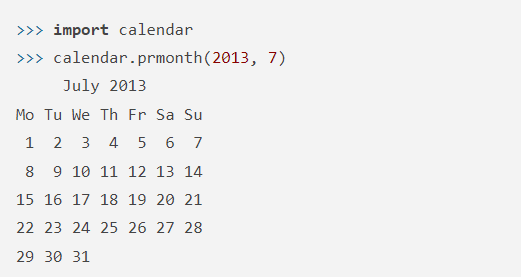

모듈이란?
저희는 지금껏 변수를 만들고 함수를 만들며 자급자족하여 만들었었습니다.
그러나 이제는 남이 만든 부품이나 심지어는 그 자체를 전부 들고 올 수 있습니다.
이떄 부품 역할을 하는 것이 모듈입니다.
수학적 기능을 끌어오려면 math 모듈을 쓰면 됩니다.
>>> import math
이제 원주율도 쉽게 구할 수 있죠.
>>> math.pi
3.1415926535897931
쉽죠?
달력을 쉽게 구현해볼까요?
이처럼 2줄이면 충분합니다
얼마나 편리한지 아시겠죠?
모듈 불러오기
모듈은 크게 2가지 방식으로 불러올 수 있습니다.
첫째
>>> import 모듈
둘째
>>> from 모듈 import 이름
첫 번째는 모듈 전체를, 두 번째는 모듈 중 일부만 가져오는 것입니다.
여기까지 하도록 하겠습니다. 수고하셨습니다.